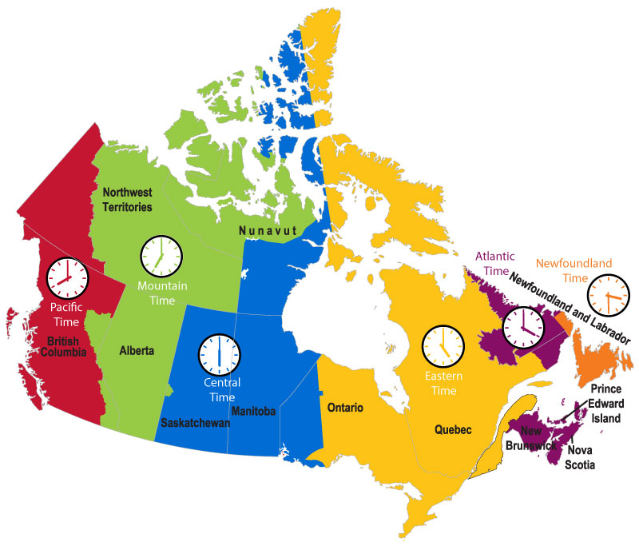
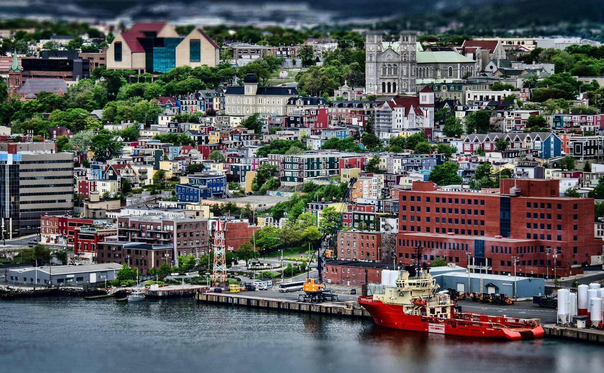

Канада
Краткая информация
-
Место: 2 (ТОП-10)
-
Площадь: 9 984 670 км²
-
Население: 38 654 738 чел. (февраль 2022 г.)
-
Столица: Оттава (с 1867 г.)
-
Языки: Английский язык, французский язык
-
Валюта: Канадский доллар, $ или C$
-
Крупнейшие города: Торонто, Ванкувер, Монреаль, Калгари, Эдмонтон
Георафическое положение и границы
-

Канада
Государство в Северной Америке, крупнейшее по площади на этом континенте и второе в мире. Омывается Атлантическим, Тихим и Северным Ледовитым океанами, имея самую длинную береговую линию в мире. Граничит с Соединёнными Штатами Америки на юге и на северо-западе, также имеет морские границы с Данией на северо-востоке и с Францией на востоке. Граница Канады и США является самой протяжённой общей границей в мире.
География Канады широка и разнообразна. Занимая северную часть североамериканского континента (около 40 %), по площади территории Канада является второй страной в мире после России.
-
Канада на карте
-
Канада на карте
Канада занимает огромную территорию между Тихим океаном на западе и Атлантическим — на востоке (отсюда и девиз страны «От моря до моря»), между США на юге и северо-западе (Аляска), Северным Ледовитым океаном на севере и Гренландией на северо-востоке. На широте южного берега Ньюфаундленда находится французская заморская территория Сен-Пьер и Микелон. По общей площади Канада немного превосходит США или Китай.
Часовые пояса Канады
Территория Канады располагается в шести часовых поясах:
- Часовой пояс Ньюфаундленда UTC -03:30
- Атлантический часовой пояс UTC -04:00
- Восточный часовой пояс UTC -05:00
- Центральный часовой пояс UTC -06:00
- Горный часовой пояс UTC -07:00
- Тихоокеанский часовой пояс UTC -08:00
Включает полный остров Ньюфаундленд и юго-восточную часть региона Лабрадор.
Атлантический часовой пояс включает большую часть Лабрадора и трех других провинций - Нью-Брансуик (NB), Новая Шотландия (NS), Остров Принца Эдуарда (PE).
Восточный часовой пояс охватывает восточную часть Нунавута (NU), большую часть провинций Онтарио (ON) и Квебек (QC).
Включает всю Манитобу (MB), Саскачеван (SK) с небольшим исключением и довольно большой кусок Нунавута (NU).
Включает полностью Альберту (AB) и Северо-Западные территории (NT), а также западную часть Нунавута (NU), небольшое исключение в Саскачеване (SK), восточные и юго-восточные районы Британской Колумбии (BC).
Эта зона охватывает большую часть Британской Колумбии (Британская Колумбия) и весь Юкон (YT).
Некоторые части страны переходят на летнее время и оказываются в часовых поясах UTC -03:00 и UTC -02:30.
-

Часовые пояса
-
Часовые пояса
Влияние часовых поясов - малоизвестная, но важная проблема для международного бизнеса. Часовые пояса страны исторически находились под влиянием торговых моделей и партнеров. Установка одного и того же часового пояса для партнера упрощает торговлю, так как часы работы совпадают.
Климат
Площадь Канады охватывает субарктический и умеренный пояса. Как следствие, климат этой страны также отличается большим разнообразием.
На основной части территории страны климат умеренный и вполне мягкий. В северных областях климат в основном субарктический.
Средние температуры зимнего периода колеблются от -35 °C на севере страны до +4 °C на юге тихоокеанского побережья. Средние летние температуры доходят до +21 °C на юге страны и от -4 °С до +4 °C на островах Канадского Арктического архипелага. За Полярным кругом температурная амплитуда почти постоянно находится в пределах ниже ноля.
-
Озеро Морейн
-

Джаспер (природоохранная зона в Альберте)
Средние температурные показатели каждого месяца, а особенно в период с июля по январь, сильно отличаются из-за влияния на погодные условия сразу нескольких климатических поясов. В каждой из областей страны климат индивидуален.
Годовая норма осадков находится в диапазоне от 150 мм. И в северной оконечности до 1250 мм. на побережьях Атлантики и 2500 мм. на побережьях Тихого океана. На Атлантическом побережье в результате взаимодействия континентальных и атлантических воздушных масс погода неустойчивая, зимой часты шторма и обильные снегопады, летом теплый период длится дольше, чем в других восточных частях страны, но никогда не бывает особенно жарко. Наблюдается частая и резкая смена атмосферного давления.
Наиболее холодные регионы страны размещены в северных областях Канады. Наиболее теплым местом считается южное побережье Тихого океана.
На климатические особенности Канады наибольшее влияние оказывает ее территориальная вытянутость в широтном направлении. Скалистые горы являются естественным барьером для поступления вглубь страны холодных ветров, которые идут с океана.
Лето в Канаде прохладное. На это влияет близкое соседство территорий с Северным Ледовитым океаном.
Самым теплым месяцем в году считается июль. В южных областях на этот короткий период температура воздуха обычно поднимается до +21°С. На островных территориях Канадского Арктического архипелага температурные показатели варьируются от -4°С до +4°С. Наиболее теплый и мягкий климат отмечается в Британской Колумбии. Такие погодные характеристики свойственны для побережья. Однако, самое теплое место это остров Ванкувер.
В зимний период здесь довольно часто отмечается дождливая погода. Для канадских прерий характерна резкая смена температурного режима. Порой перемены на этих территориях случаются в течение нескольких дней.
Природа Канады
Границы этой страны проходят от 43 до 80 градусов северной широты. Такой большой разброс стал главным фактором, повлиявшим на формирование климата и природы Канады. Кроме того, этому также способствовало наличие Скалистых гор, которые не пропускают в страну западные океанические ветры, и близость к Северному Ледовитому океану.
При описании природы Канады нельзя не упомянуть о ее водных ресурсах. Местные реки питаются водами Тихого, Атлантического и Северного Ледовитого океанов, а также Мексиканского и Гудзонова заливов.
Крупнейшими реками страны являются:
-

Фрейзер
-

Колумбия
-

Маккензи
-

Нельсон
-

Черчилл
В Канаде сосредоточен самый большой запас пресной воды в мире, который распределен Великими озерами Северной Америки и всеми прочими канадскими водоемами. Здесь же расположен старейший морской канал – Ридо, который 2007 году вошел в список объектов Всемирного наследия ЮНЕСКО.
Территория страны – холмистая равнина. Горные массивы пролегают вдоль западного и восточного побережий. Канадские Кордильеры, берущие начало на границе с Аляской, протянулись вдоль берегов Тихого океана. В высоту многие горы достигают от 2 до 2,7 км. Вдоль побережья Атлантики протянулись не слишком «рослые» горные хребты массива Аппалачи. К нему относятся вершины восточнее Квебека, горы Шикшок (это север полуострова Гаспе) и массив Нотр-Дам на правобережье реки Святого Лаврентия.
Протяженность горной цепи в этой стране составляет около 5000 км. Скалистые горы образованы из известняков и сланцев. В них берут начало следующие реки:
- Колорадо;
- Миссури;
- Снейк;
- Рио-Гранде.
Аппалачи представляют собой холмистое плоскогорье, на котором произрастают широколиственные, хвойные и смешанные леса. Реальная горная природа Канады хороша не только своей красотой и разнообразием, но и богатым возможностями для отдыха. На склонах канадских гор были открыты горнолыжные курорты, оборудованные современной туристической инфраструктурой.
Река Св. Лаврентия – главная водная артерия Канады. Она имеет множество притоков: Сен-Морис, Оттава, Маникуаган и ряд других. Будучи судоходной, она соединяет Атлантику с бассейном Великих озер. Другие реки: Нельсон, Саскачеван, Атабаска, Черчилль, Пис-Ривер, Макензи, Фрейзер, Невольничья. Что касается озер, то не каждое государство может похвастать таким их количеством.
Самые известные и значительные из них расположены на американской границе: Онтарио, Верхнее, Эри и Гурон. На границе Канады и США также находится знаменитый Ниагарский водопад – один из самых мощных на Земле.
-

Ниагарский водопад
Растительный мир Канады
Канада расположена в зоне арктических пустынь, тундры, тайги, смешанных лесов, степей.
Тундра тянется в южном направлении вдоль западного побережья Гудзона. Здесь растут ивы и карликовые березы, на полях цветут люпины, маргаритки, лютики, примула, злаки и вереск. Заболоченные участки усыпаны кустами клюквы.
Растительность меняется от лиственных лесов на юге Онтарио до смешанных и лаврентийских лесов и к северу постепенно уменьшается от тайги (северных лесов или хвойного пояса) к тундре и далее к арктическим пустыням Севера. Полярные острова находятся в зоне, поверхность которой покрыта снегами и ледниками, не тающими даже коротким летом. Баффинова земля и другие острова у северного побережья Канады покрыты тундрой, которая занимает и всю северную материковую часть Канады, проникая далеко к югу вдоль западного побережья Гудзонова залива и на полуострове Лабрадор. Здесь растут вересковые, осоки, кустарниковые берёза и ива. К югу от тундры между Тихим и Атлантическим океанами раскинулась широкая полоса лесов.
Преобладают хвойные леса; главные породы — чёрная ель на востоке и белая ель на западе (в долине р. Маккензи), сосна, лиственница, туя и др. Менее распространённые лиственные леса состоят из тополя, ольхи, берёзы и ивы.
Особенно разнообразны леса в районе Великих озёр (американский вяз, веймутова сосна, канадская тсуга, дуб, каштан, бук). На тихоокеанском побережье распространены хвойные леса из дугласовой и ситхинской ели, аляскинского и красного кедра; около Ванкувера встречаются земляничное дерево и орегонский дуб. В приморских приатлантических провинциях — акадские леса с бальзамической пихтой, чёрной и красной елью; также кедр, американская лиственница, жёлтая берёза, бук.
-
Бук
-
Канадская тсуга
-

Бальзамическая пихта
Животный мир Канады
Фауна этой страны также меняется в направлении с севера на юг. Например, у побережья Северного Ледовитого океана можно встретить мускусных овцебыков, которые благодаря густой темной шерсти способны выдерживать сильные морозы и ветры.
В зоне тундр водятся северный олень, полярный заяц, лемминг, песец и оригинальный мускусный овцебык. Южнее животный мир более разнообразен — лесной олень карибу, благородный олень вапити, лось.
В горах обитают бараны толстороги и снежные козы. Основными представителями дикой природы Канады являются волки, медведи гризли, черные и бурые медведи, пумы, лисы и канадские рыси. Можно встретить и более мелких хищников: соболей, пеканов, росомах, выдр, енотов-полоскунов.
-

Олень вапити
-
Гризли
Довольно многочисленны грызуны: канадская белка чикари, бурундук, американская летяга, бобр, прыгунчик из семейства тушканчиков, ондатра, дикобраз — иглошерст, луговой и американский заяц, пищуха.
-
Попрыгунчик
-
Американская летяга
На территории страны обитает более 450 видов птиц, в том числе большие голубые цапли, гагары, дикие гуси. Настоящим украшением животного мира и природы Канады являются беркуты, казарки и рубиновые колибри.
Фауна пресмыкающихся и земноводных небогата. В пресноводных водоёмах много рыбы. Нередко их называют «клондайками», ведь они полны самыми разными видами рыб. В них обитают щуки, окуни, форель и карпы. Вес некоторых экземпляров достигает 20 кг.
Природные ресурсы
Канадские территории всегда славились обилием природных ресурсов. Вторая по размерам страна в мире имеет различные типы естественных богатств, которые приносят ее казне немалый ежегодный доход.
Запасы пресной воды
На канадских землях находится примерно 15% от всех мировых запасов пресной вода. Вода, как ресурс, играет для страны огромную роль. Десять крупных рек и огромное множество мелких пресных источников помогают канадцам развивать сельское хозяйство, обеспечивают население питьевой водой, используются для получения электроэнергии, а также в различных производствах. Еще в Канаде есть пресные озера, которые делают фауну и флору вокруг них полезной для человека. Там водится различная рыба, регулярно попадающая на канадские рынки. К тому же, в стране действуют 4 крупные гидроэлектростанции, работа которых без пресной воды невозможна.
Ресурсы канадской земли
Площадь Канады составляет внушительную цифру. Она равняется 10 миллионам квадратных километров. Всего 7% земли отданы для ведения аграрного хозяйства. Цифра небольшая, но она обусловлена низкой плотностью населения канадского государства. Из-за резких климатических перепадов каждая область страны отвечает за свою сельскохозяйственную сферу. Например, в районе Квебека производят молоко и подобную продукцию. Онтарио славится своими овощами, а на западе государства выращивают разнообразное зерно.
Ресурсы канадского леса
Лес – не только «легкие» планеты, но важный экономический ресурс любой страны. Канада здесь не стала исключением. Треть площади государства покрыто богатыми лесными массивами. Всего 10% от общей лесной массы запрещено вырубать законом. Остальные леса Канады активно разрабатываются. Древесина используется для внутренних нужд государства, а также отправляется на экспорт в ближайшие страны.
-
Канадский лес
-
Канадский лес
Канадские недра и их возможности
В данном государстве добывают следующие минеральные ресурсы: нефть, уголь, уран, газ, цветные и другие металлы. Добыча полезных ископаемых проводится умеренно. Канадцы беспокоятся о том, что запасы их земли могут быстро истощиться, поэтому бережно относятся к данному типу природных ресурсов.
-
Нефтеносные пески
Альтернатива электроэнергии и нефти
Альтернативные варианты получения энергии в Канаде активно разрабатываются и внедряются в жизнь. С 2007 года на канадских территориях повсеместно используют ветряки и солнечные батареи. Это делается для обретения независимости от импортного сырья, а также для сохранения благополучной экологической обстановки.
Экспорт природных ресурсов Канады
На сегодняшний день, канадцы считаются главными экспортерами минерального сырья в США и другие страны. По лесным запасам Канада занимает в мире почетное третье место. Поэтому экспорт леса там – дело привычное и прибыльное. Нередко на экспорт вывозятся меха и промысловая рыба. Пушной зверь в Канаде водится повсеместно, да и рыбы в ее реках рождается огромное количество. Канада – государство с высоким уровнем жизни. Забота ее жителей об экологии и ресурсах вызывает восхищение, а рациональное использование даров природы закреплено на законодательном уровне.
Развлечения и отдых
Аттракцион «Фабрика страха» (Nightmares Fear Factory). Когда-то, согласно преданию, здание аттракциона занимала фабрика гробов. Тело ее владельца Мортимера, погибшего в стычке с местными юнцами, непонятным образом исчезло из гроба, а дух его якобы бродит по окрестностям, наводя ужас. Находится аттракцион в городке вблизи Ниагарского водопада.
Эйр Канада-Центр (The Air Canada Centre) находится в Торонто, и на его арене можно посмотреть хоккейные матчи с участием Toronto Maple Leafs. Если хотите попасть на матчи, позаботьтесь о билетах заранее, лучше за несколько месяцев. Хоккей тут очень популярен, поэтому они расходятся быстро.
Цирк du Soleil расположен в Монреале. Труппа состоит из 1300 артистов, представляющих 50 стран. Постановки отличаются высочайшим исполнительским мастерством. Но номеров с животными нет: единую сюжетную линию представлений выдерживают акробаты, клоуны, жонглеры.
Развлекательный парк La Ronde – второй по величине в стране и крупнейший в Квебеке. Также находится в Монреале. На радость, и детям, и взрослым горки, карусели и посвященный японским видеоиграм на консолях центр Nintendo. Новый сезон открывается в мае, а зимой аттракционы не работают.
Широкие возможности для досуга открываются и в столице – Оттаве:
- Pine Viev Municipal – гольф-клуб, находится недалеко от центра, предлагает игрокам и дополнительные услуги;
- GoodLife Fitness – клуб, к услугам посетителей которого спортплощадки, тренажерные залы, массажные кабинеты, бассейн;
- Rideau Carleton Raceway – популярный столичный ипподром, скачки организуются практически еженедельно;
- Casino du Lac-Leamy – казино с большими игровыми залами, есть отличный ресторан;
- Heart & Crown – стильный ночной клуб для любителей современной музыки.
- Национальная галерея Канады (National Gallery of Canada), где выставлены работы таких канадских мастеров как Алекс Колвилл (Alex Colvile) или Том Томсон (Tom Thomson).
Британская колумбия
В национальный парк «Пасифик-Рим» (Pacific Rim National Park Reserve) стоит ехать за пляжами и серфингом, в курортный Уистлер (Whistler) — за высокими горами и крутыми снежными спусками, в Большой Медвежий Лес (Great Bear Rainforest) и на архипелаг Хайда-Гуам (Haida Gwaii) — за дикой природой и фауной, в долину Оканаган (Okanagan Valley) — за отличным вином.
-

Парк «Пасифик-Рим»
Онтарио
Это один из самых посещаемых регионов Канады.
Сюда стоит ехать, чтобы посмотреть на Ниагарский водопад, прогуляться по оживленным улицам Торонто (Toronto), совершить трекинг в парке «Брус» (Bruce Peninsula National Park), покататься на каноэ в «Фатом-Файф» (Fathom Five National Marine Park).
-

«Фатом-Файф»
Новая Шотландия
В эту провинцию стоит заглянуть игрокам в гольф, поклонникам мото– и велоспорта.
Кабот Трейл (Cabot Trail) — один из самых живописных островов северной Америки, где расположены лучшие в стране поля для гольфа, а также вело- и мототрассы, тянущиеся на десятки километров вдоль побережья.
-
Кабот Трейл
Альберта
Сюда стоит ехать, чтобы посетить знаменитый природный парк «Банф» (Banff National Park). Это уникальный природный заповедник, протяженностью более 10 тысяч квадратных метров. На его территории — леса, водопады, горы, ледники. Здесь также можно увидеть диких животных: медведей, лосей, бобров и других.
-
Парк «Банф»
Вуд-Баффало ( Wood Buffalo National Park) — национальный парк на территории провинции Альберта и северо-западных территорий. Основан в 1922 году. Крупнейший национальный парк в стране и один из крупнейших в мире, объект Всемирного наследия ЮНЕСКО с 1983 года.
-

Вуд-Баффало
-

Вуд-Баффало
Есть здесь и другие примечательные природные места: озеро Мораин (Moraine Lake), парк «Уотертон-Лейкс» (Waterton Lakes National Park), парк «Джаспер» (Jasper National Park) , Кананаскис (Kananaskis Country). Для лыжного отдыха в Альберте стоит выбрать расположенный в регионе канадских скалистых гор (The Canadian Rockies) курорт Саншайн Вилладж (Sunshine Village Ski Resort).
Квебек
Эта франкоговорящая провинция привлечет ценителей гастрономии и культуры.
- Замок-отель Шато-Фронтенак
-
Замок-отель Шато-Фронтенак
-

Замок-отель Шато-Фронтенак
- Старый Квебек
-

Старый Квебек
- Променад Самуэль де Шамплейн
-

Променад Самуэль де Шамплейн
Увидеть замок можно не только на картинках, или забираясь на недоступные вершины. Один из самых известных замков – Шато-Фронтенак располагается в Квебеке (Канада). Его силуэт, так гордо взмывающий над небольшим городом, стал одним из самых узнаваемых силуэтов зданий во всем мире. Сдержанная красота и величие – те качества, что присущи этому удивительному отелю-замку.
В самом центре Квебека, а точнее, на мысе Диамант располагается один из самых известных отелей в мире – Шато-Фронтенак. Он находится совсем неподалеку от известной квебекской крепости, благодаря которой это место известно, как единственный город в Северной Америке, который сохранил ансамбль своих оборонительных сооружений.
С одной стороны от этой военной постройки, из замка открываются захватывающие и умиротворяющие виды на реку Святого Лаврентия и на сам город, так тщательно оберегавший свою историю. Сегодня замок — визитная карточка Квебека, гордость всех его жителей, а также как один из самых желаемых отелей в мире.
Исторический центр города находится под защитой Юнеско. Первые здания тут начали возводить еще в 7 столетии, однако большая часть построек принадлежит к 19 веку. Сравнить Старый Квебек можно с классическим кварталом Старого света во Франции. Здесь есть собственные фортификационные укрепления, особняки с богатой историей, великолепные храмы.
Красочная улица, растянувшаяся по облагороженной набережной, очень популярна у туристов и жителей Квебека. Свое название она получила в память об основателе города и знаменитом французском путешественнике. Променад выполнен в современном стиле: тут есть каменные насыпи возле воды, газоны геометрической формы, множество платформ из древесины.
Ньюфаундленд и Лабрадор
Провинция (да, это название одной провинции) со множеством исторических памятников времен колониальной Канады.
Сюда стоит ехать, чтобы посетить холм Сигнал-Хилл (Signal Hill National Historic Site), небольшой городок с оригинальным сооружением XVIII века.
-

Ньюфаундленд и Лабрадор
-
Полуостров Лабрадор
Кухня
Канада – это двунациональное государство и, к тому же, страна мигрантов, поэтому в национальной кухне чувствуются отголоски кулинарных традиций не только англичан и французов, но и других народов мира. Однако истоки канадской кухни следует искать, прежде всего, в традициях коренных народов Северной Америки, которые дополнялись в XVIII-XIX веках с каждой новой волной эмиграции из европейских стран и Китая.
В основе канадских угощений лежит квебекская кухня – так сложилось географически и исторически. Канадцы, как и французы, предпочитают мясные блюда, включая их в повседневное меню, например, стейк, бифштекс, лангет, ростбиф. На первое в Стране кленового листа обычно подают перетертые овощные супы с добавлением цветной капусты, помидоров. Особенной же любовью здесь пользуются супы из тыквы. Нередко готовятся мясные бульоны с лапшой или гренками.
-

Суп из тыквы
Местные жители неравнодушны к филе-брошетт, напоминающему хорошо знакомый россиянам шашлык. Готовится так: кусочки филе, бекона, лука и шампиньонов насаживаются на шампур и обжариваются на вертеле. Все рецепты в одной статье привести невозможно, поэтому ограничимся названиями некоторых блюд, хорошо знакомых и туристам: буженина, картофель по-шотландски, картошка с сыром «Путин» (к президенту России оно никакого отношения не имеет, да и произносится с ударением на последний слог), сыр «Чеддер», блинчики по-канадски, луковый суп по-французски и многие другие.
-
Филе-брошетт
-
Блинчики по-канадски
Одной из «визитных карточек» канадской кухни, о которой следует сказать отдельно, является кленовый сироп. Его готовят из сока сахарного клена и красного клена, добываемого по методике, опробованной еще индейцами. Чтобы получить 1 литр сиропа, необходимо переработать 40 литров сырья. Чаще всего он используется как добавка к блинам и вафлям, а также служит ингредиентом для приготовления выпечки, мороженого, десертов и даже кукурузного хлеба. Львиная доля производимого в стране сока (75%) приходится на Квебек. Натуральный продукт имеет характерный привкус дерева.
- https://wikiway.com/canada/#gl7
- https://mircanada.ru/prirodnye-resursy-kanady/
- https://obrazovaka.ru/geografiya/prirodnye-zony-kanady.html
- https://womanadvice.ru/priroda-kanady
- https://wikiway.com/canada/
- https://flagi.site/chasovye-poyasa-kanady
- https://ru.wikipedia.org/wiki/Время_в_Канаде
- https://workstudyvisa.com/ru/популярные-часовые-пояса-провинции-канада/
- https://obrazovaka.ru/geografiya/klimat-kanady-kratko.html
- https://kupuk.net/uroki/geografiya/klimat-kanady-kratko-o-klimaticheskih-poiasah-i-ysloviiah/
- https://obrazovaka.ru/geografiya/prirodnye-zony-kanady.html
- https://womanadvice.ru/priroda-kanady
- https://travelask.ru/canada
- https://www.tripzaza.com/ru/destinations/dostoprimechatelnosti-kvebeka
- https://guruturizma.ru/shato-frontenak-kanada/